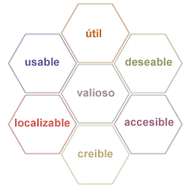
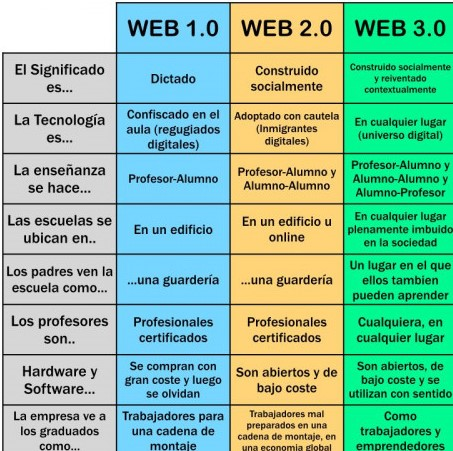
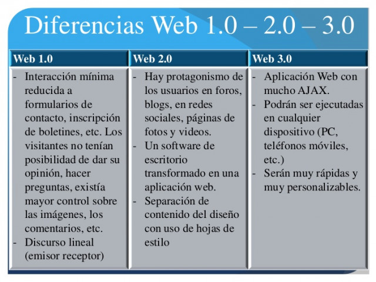
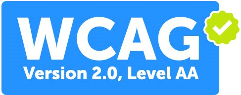

accesibilidad web
Concepto de “Accesibilidad Web”
Concepto y objetivos de la Accesibilidad Web:
La accesibilidad web tiene como objetivo lograr que las páginas web sean utilizables por el máximo número de personas, independientemente de sus conocimientos o capacidades personales e independientemente de las características técnicas del equipo utilizado para acceder a la Web. La necesidad de que la Web sea universal y accesible por cualquier persona está presente desde el principio de la Web, ya que era un requisito contemplado en su diseño por su creador Tim Berners-Lee:
primarios.
Limitaciones de acceso a la web:
Limitaciones que pueden impedir el acceso a la información en la Web.
• Deficiencias visuales: Entre las que se encuentran la ceguera, la visión reducida y los problemas en visualización de color.
• Deficiencias auditivas: Estas deficiencias pueden ser consideradas menos limitadoras en el acceso y uso de contenidos digitales, debido a que el canal sonoro es mucho menos utilizado en interfaces web que el canal visual. Aún así, no podemos olvidar limitaciones y barreras derivadas de esta discapacidad, como es el caso del lenguaje.
• Deficiencias motrices: Son las relacionadas con la capacidad de movilidad del usuario. Estos usuarios no suelen ser capaces de interactuar con el sistema a través de dispositivos de entrada tradicionales, por lo que utilizan dispositivos alternativos (Ejem: basados en voz).
• Deficiencias cognitivas y de lenguaje: Son usuarios que presentan problemas en el uso del lenguaje, la lectura, percepción, memoria, salud mental…

El consorcio World Wide Web (W3C)
Qué es, qué estructura tiene y cuáles son sus objetivos:
Es un consorcio internacional en el que las organizaciones miembros, el personal a tiempo completo y el público en general trabajan juntos para desarrollar normas y directrices web diseñadas para garantizar el crecimiento a largo plazo de la web.
Evolución de la web
La Web 1.0
Las primeras páginas web, que actualmente se referencian como web 1.0, eran páginas estáticas que no se actualizaban frecuentemente ya que necesitaban un cierto nivel de conocimiento técnico para ser creadas y modificadas (se programaban directamente en lenguaje HTML).
Conocer la evolución de la web es el primer paso para entender la definición de la Web 2.0. El desarrollo de las tecnologías y las aplicaciones y servicios de la web han marcado las etapas de esta evolución que se ha acelerado en los últimos años.

La Web 2.0
El término Web 2.0 se utiliza para referirse a una nueva generación de sitios web que permiten a las personas colaborar y compartir información en línea de formas que antes no eran posibles. Este tipo de sitios web suelen considerarse interactivos, colaborativos o con contenidos generados por los usuarios. Sitios web como Facebook, Twitter, YouTube y Wikipedia son ejemplos de la web 20. La web 2.0 también se considera una forma de cultura participativa, lo que significa que adopta muchas formas, como el activismo social de base para el cambio global, la colaboración.
La web 2.0 ofrece distintos servicios como
• Educación en Línea (e-Learning)
• Podcast
• VideoBlogs
• Mapas interactivos
• Compartición de fotos, archivos, videos, etc.
• Juegos on-line.
• Comercio electrónico (e-commerce)
• Sistemas de mensajería instantanea.
La Web 3.0
Se refiere a una web capaz de interpretar e interconectar un mayor número de datos, lo que permitirá un aumento de interactividad y significado.
La web 3.0 es una extensión del WWW que, a través de agentes software, permiten encontrar, compartir e integrar la información más rápidamente. Otro aspecto relacionado con la web 3.0 es la transformación de la web en una base de datos, donde se llegaría a una situación en la que cada usuario tendría un perfil único en Internet basado en el historial de sus búsquedas.
Un resumen entre las 3 webs:


Pautas de accesibilidad para el diseño web
Versión WCAG 1.0:
En mayo de 1999 se publicó WCAG 1.0, la primera versión de las pautas de
accesibilidad web. La redacción de estas pautas hacía constantemente referencia a
tecnologías concretas como HTML o CSS, lo cual se vio al poco tiempo de su publicación
que era un problema porque las tecnologías web evolucionaban rápidamente con el
tiempo y las pautas se podían quedar obsoletas en un plazo de tiempo corto
Niveles de prioridad de las pautas WCAG 1.0
Las Pautas de Accesibilidad al Contenido en la Web (WCAG) contienen una serie de
prioridades (o niveles de prioridad) que son un conjunto de puntos de verificación que
describen cómo aplicar esa pauta a las características propias
Cada punto de verificación está asignado a uno de los tres niveles de prioridad
establecidos por las pautas, y se indica el grado en que afecta el incumplimiento de dicho
punto a la accesibilidad del sitio Web
Prioridad 1: son aquellos puntos se tienen que cumplir. Es un requisito básico, ciertos
grupos de usuarios no podrán acceder a la información del sitio Web si no se cumple
dicha prioridad.
Prioridad 2: son aquellos puntos que se deberían cumplir ya que, si no fuese así, sería
muy difícil acceder a la información para ciertos grupos de usuarios
Prioridad 3: son aquellos puntos que se deberían cumplir. De no cumplirse algunos
usuarios tendrían dificultades para acceder a la información.
Los niveles de prioridad están contenidos unos dentro de otros. Así la Prioridad 1 está
incluida dentro de la Prioridad 2 y ésta a su vez forma parte de la Prioridad 3
Versión WCAG 2.0
WCAG 2.0 se organiza en varios niveles con el fin de facilitar su comprensión y
aplicación: principios generales, pautas generales, criterios de conformidad verificables
y una amplia colección de técnicas suficientes, técnicas recomendables y fallos comunes
documentados con ejemplos, enlaces a recursos adicionales y código.
Existen cuatro principios generales que son la base de la accesibilidad web:
Principio 1: Perceptible: la información y los componentes de la interfaz de usuario
deben ser mostrados a los usuarios en formas que ellos puedan entender.
o Directriz 1.1: Texto alternativo: Proporciona texto alternativo para el contenido
que no sea textual, así podrá ser transformado en otros formatos.
o Directriz 1.2: Contenido multimedia dependiente del tiempo: Proporciona alternativas sincronizadas para contenidos multimedia sincronizados.
o Directriz 1.3: Adaptable: Crear contenido que pueda ser presentado de
diferentes formas sin perder ni información ni estructura.
o Directriz 1.4: Distinguible: Facilitar a los usuarios ver y escuchar el contenido
incluyendo la distinción entre lo más y menos importante.
Principio 2: Operable: Los componentes de la interfaz de usuario y la navegación debe
ser manejable.
o Directriz 2.1: Teclado accesible: Poder controlar todas las funciones desde el
teclado.
o Directriz 2.2 Tiempo suficiente: Proporciona tiempo suficiente a los usuarios
para leer y utilizar el contenido.
o Directriz 2.3: Ataques epilépticos: No diseñar contenido que pueda causar
ataques epilépticos.
o Directriz 2.4: Navegación: Proporciona formas para ayudar a los usuarios a
navegar, a buscar contenido y a determinar donde están estos.
Principio 3: Comprensible. La información y las operaciones de usuarios deben ser
comprensibles.
o Directriz 3.1: Legible. Hacer contenido de texto legible y comprensible.
o Directriz 3.2 Previsible: Hacer la apariencia y la forma de utilizar las páginas web
previsibles.
o Directriz 3.3 Asistencia a la entrada de datos: los usuarios de ayuda evitarán y
corregirán errores
Principio 4: Robustez: el contenido deber ser suficientemente robusto para que puedaser bien interpretado por una gran variedad de agentes de usuario.
o Directriz 4.1 Compatible: Maximiza la compatibilidad con los agentes de usuario
actuales y futuros, incluyendo tecnologías de asistencia.
Cada principio se organiza en una serie
de pautas, que proporcionan los objetivos básicos que se deben lograr con el fin de crear
un contenido más accesible para los usuarios con distintas discapacidades. En total
existen doce pautas que a su vez se dividen en 61 criterios de conformidad. Los criterios
de conformidad se organizan en tres niveles de conformidad: A (el más bajo), AA y AAA
(el más alto). Cuando se cumplen todos los criterios de conformidad de un nivel y del
anterior, entonces se puede decir que la página web ha alcanzado ese nivel de
conformidad.
Niveles de WCAG 2.0
Según WCAG 2.0, para que una página web sea conforme con las WCAG 2.0, deben satisfacerse
todos los requisitos de conformidad siguientes:
Nivel de conformidad: Uno de los siguientes niveles de conformidad se satisface por
completo
o Nivel A: Para lograr conformidad con el Nivel A (el mínimo), la página web
satisface todos los Criterios de Conformidad del Nivel A, o proporciona
una versión alternativa conforme.
o Nivel AA: Para lograr conformidad con el Nivel AA, la página web satisface todos
los Criterios de Conformidad de los Niveles A y AA, o proporciona una versión
alternativa conforme
al Nivel AA.
o Nivel AAA: Para lograr conformidad con el Nivel AAA, la
página web satisface todos los Criterios de Conformidad de
los Niveles A, AA y AAA, o proporciona una versión
alternativa
conforme al Nivel AAA.
Consejos para crear una web accesible.
Para construir un sitio Web accesible se aconseja seguir una serie de pasos. En cada uno
de ellos se consideran las distintas partes de las que consta una página Web e indican
en qué momento y de qué modo hay que realizar cada cosa para construir el sitio Web
de cualquier empresa.
Seis pasos importantes a seguir serían:
-Asegúrate de que su página web sea compatible con el teclado.
-Agrega texto alternativo a las imágenes.
-Elige tus colores con cuidado.
-Usa encabezados para estructurar tu contenido correctamente.
-Diseña los formularios para que sean accesibles.
-No uses tablas para diseñar.
Otras cosas a seguir son:
Contenido y estructura:
Lo primero que se debe hacer es introducir todo el texto, sin ningún efecto ni estilo. En
dicho texto se identificarán los elementos estructurales básicos, como pueden ser
encabezados, listas, tablas, etc.
Hay que tener en cuenta que dichos elementos se introducen para añadir valor
semántico a los contenidos, no para añadir estilos, destacar texto, etc.
En este paso también se incluirán los elementos no textuales (imágenes, objetos
multimedia, etc.). Estos elementos se añadirán sólo cuando contengan información
relevante y utilizando textos alternativos
Presentación y maquetación:
Hay que separar el contenido de la presentación. La intención es que la página Web no
dependa de los estilos que se utilicen para presentarlo. De esta forma una página podrá
verse tanto en un navegador tradicional como en lectores de pantalla, dispositivos
móviles, etc.
Se aconseja utilizar un estilo uniforme a lo largo del sitio Web para facilitar la navegación
a todos los usuarios y se desaconseja utilizar tablas de datos para la presentación de
contenidos (es mejor utilizar estilos).
Revisión
Una vez terminado la construcción de un sitio, es necesario revisar y comprobar los
requisitos de accesibilidad.
Las herramientas de validación:
Una vez terminada la página Web es fundamental evaluar la accesibilidad mediante las
herramientas adecuadas.
Herramientas de evaluación
Herramientas de evaluación automáticas
Son herramientas que permiten identificar de forma automática problemas de accesibilidad.
Analizan las páginas tomando como base los estándares de las pautas de accesibilidad.
Aunque resultan de gran utilidad, se debe tener en cuenta que tienen ciertas limitaciones y
no son capaces de identificar todos los problemas de accesibilidad. No son suficientes para
asegurar que un sitio Web es 100% accesible y por ello la revisión automática hay que
completarla con otra manual.
Herramientas de evaluación manuales
Aunque las herramientas de validación automáticas resuelven muchos de los problemas
de accesibilidad que pudiesen aparecer en las páginas Web, dicha revisión hay que completarla
con una revisión manual.
El análisis manual presenta algunas ventajas sobre el realizado mediante herramientas
automáticas. Hay problemas que sólo pueden ser detectados mediante métodos de verificación
manuales y suelen ser más intuitivos que los automáticos.
A pesar de sus ventajas, también se pueden encontrar algunos inconvenientes:
-Requieren más tiempo.
-Es necesario utilizar más herramientas o probar configuraciones distintas.
-Requiere del juicio personal de la persona que revisa.
-Algunas situaciones son difíciles de simular.
-Algunos fallos puede no detectarlos